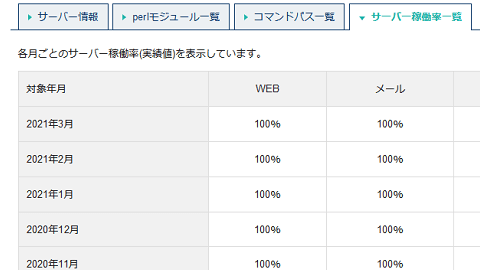
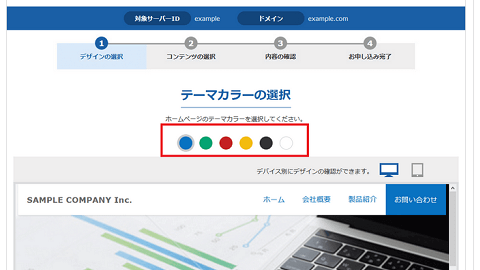
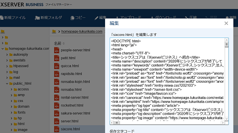
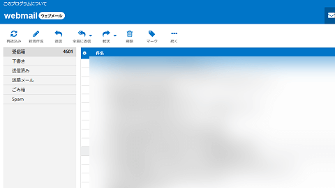
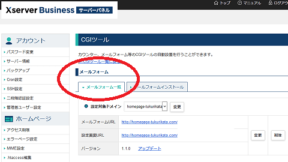
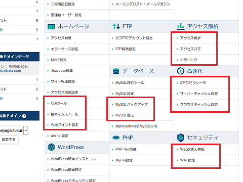

シックスコアは「Xserverビジネス」へ統合
当サイトは「ジオシティーズ → さくらインターネット → シックスコア」へと移転してきましたが、シックスコアはその後、2020年にXserverビジネスに統合されました。
そのため、現在はこちらのXserverビジネスを利用しています。
エックスサーバーの使い心地がよかったため、そのワンランク上の法人向けなら問題ないだろうと思い引っ越してきましたが、2011年から約10年間ほど毎月安定して稼働しています。

サーバー統合の際のメンテナンスなど、どうしても避けられない停止を除いて、この10年間ほぼ100％稼働していたと記憶しています。また、「自動バックアップ」や「Web改ざん検知」、セキュリティーの「WAF設定」、あるいは「各種サーバー設定の無料代行」などもあるため、企業サイトでも安心して利用することができます。
Xserverビジネスの料金プランを比較
料金は一般的な「スタンダードプラン」の場合、年間一括払いで合計50,160円（税込）、初期費用で別途に16,500円（税込）かかるため、合計66,660円（税込）の費用がかかります。そのため、初期費用を考えなければ、12ヶ月払いで月額換算4,180円（税込）の計算になります。
年間一括払いや２年一括払いにしないと割高になってしまうため、できるだけまとめて払うとよいでしょう。
Xserverビジネス「スタンダードプラン」 |
|
|---|---|
初期費用 |
16,500円（税込） |
12ヶ月 |
4,180円×12ヶ月＝50,160円（税込） |
6ヶ月 |
4,598円×6ヶ月＝27,588円（税込） |
3ヶ月 |
5,016円×3ヶ月＝15,048円（税込） |
そのほか、CPUやメモリ、データ容量の違いによってプレミアムやエンタープライズのプランが用意されていますが、どれを選択しても機能的な違いはありません。いずれもマルチドメイン無制限、データベースも無制限となっており、無料の独自SSL「Let's Encrypt」も使えます。
エックスサーバーと比較すると、こちらのXserverビジネスは高めの料金設定となっていますが、データのバックアップ機能やセキュリティー面が充実しているのに加え、各種設定の無料代行サービスなどもあるため、ビジネス用途に最適なレンタルサーバーと感じています。
■ホームページ無料制作サービス
Xserverビジネスでは、会社情報などを入力するだけで無料で会社ホームページを制作してくれるサービスがあり、こちらの場合はWordPressでの制作になります。

■ホームページ制作の相談窓口
一方、予算がある場合は、全国のホームページ制作会社のなかから最適な会社を紹介してくれますが、こちらについても相談は無料でできます。
Xserverビジネスの機能と特徴
■マルチドメイン対応
Xserverビジネスはマルチドメインに対応しており、独自ドメインを無制限で設定することができます。また、データベースも無制限となっており、複数のサイトを運営するのに便利です。
■無料の独自SSL
当サイトでは有料のジオトラストを設定していますが、無料の独自SSL「Let's Encrypt」にも対応しています。その際のレビューはこちらのページをご参照ください。
→ サイトにSSLを導入する際の実際の手順
■ファイルマネージャー
当サイトはDreamweaverで更新してますので、このファイルマネージャー機能はあまり使っていませんが、.htaccessなどの編集がしやすいです。

■ウェブメール
管理画面にてメールアドレスを設定した後、ウェブメールも利用することができます。トップページのログインの箇所に「サーバーパネル」や「ファイルマネージャー」、「WEBメール」などがありますが、そちらからウェブメールへログインすることができます。

■メールフォーム
会社のホームページでメールフォーム機能は必須の要素となりますが、「CGIツール」の箇所から無料で設置することができます。当サイトでも運営者情報のページにてメールフォームを利用してますが、簡単に設置することができました。

デザインのカスタマイズがしやすいメールフォームで使いやすいです。
■管理画面
そのほか、アクセスログやWAF設定、サイトの高速化設定やMySQLのバックアップ、Web改ざん検知、WEBフォント、WordPressの簡単インストールなどの機能があります。

Xserverビジネスではバックアップやセキュリティー面での機能が充実しているため、会社ホームページの作成に最適なレンタルサーバーといえるでしょう。
法人向けレンタルサーバー一覧
- お名前.comサーバー （GMOグループ）
- Xserverビジネス （当サイトはこちらを利用中）
- ニフクラ レンタルサーバー （富士通グループ）
- ＣＰＩ （KDDIグループ）
- アルファメール （大塚商会）
- iCLUSTA+ （長年の運用実績）
- グーペ （お店向け・個人事業、法人）
- カゴヤ （自社所有データセンター）